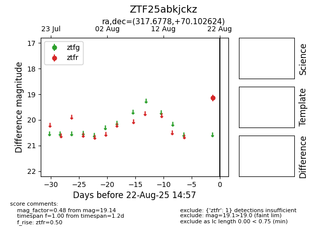

Target ZTF25abkjckz at 2025-08-22 15:36, see:
FINK: fink-portal.org/ZTF25abkjckz
Lasair: lasair-ztf.lsst.ac.uk/objects/ZTF25abkjckz
ALeRCE: alerce.online/object/ZTF25abkjckz
alt names
ZTF25abkjckz (ztf,alerce)
coordinates:
equatorial (ra, dec) = (317.6778,+70.10262)
galactic (l, b) = (106.1325,+14.82202)
photometry
last ztfr=19.14
1 ztfr detections
